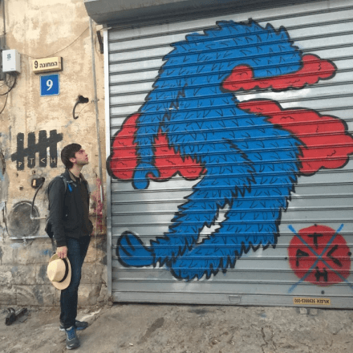
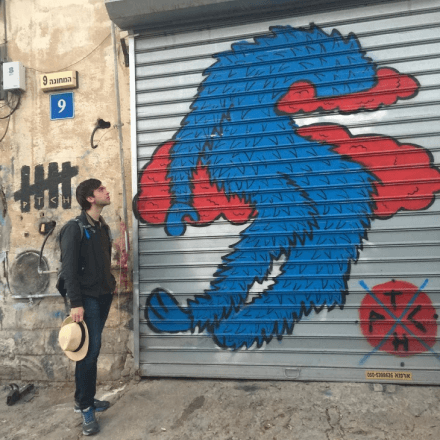
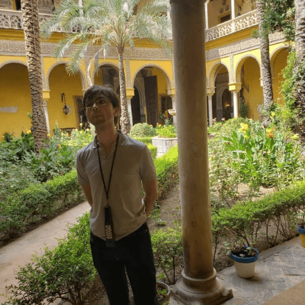
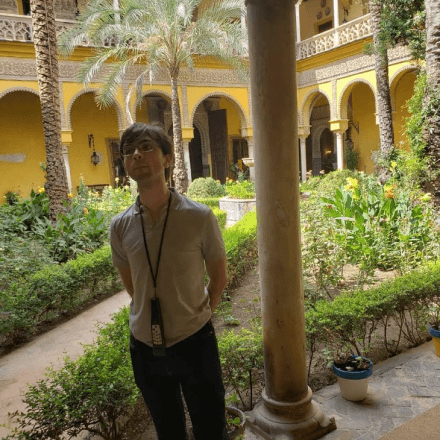
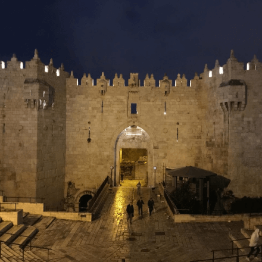
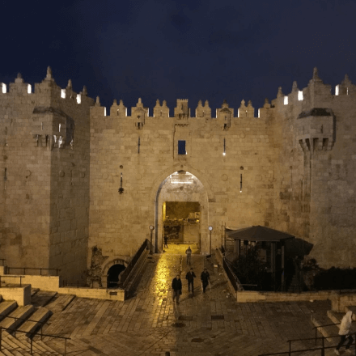
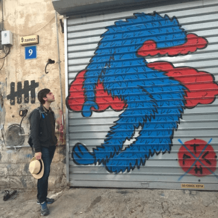
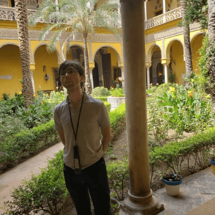
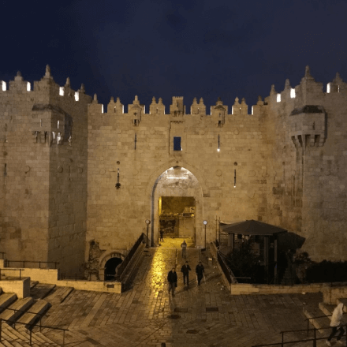

Trip photos
 

 


 



I produce the Build your Superpower show to help people achieve their potential.
Dhiraj Mukherjee, Shazam's co-founder, said that our interview was "the only one where [he] learnt something of [himself]".
My promise: you won't regret signing up to the show below.
What I do
Where I’m from
Memorable experiences


